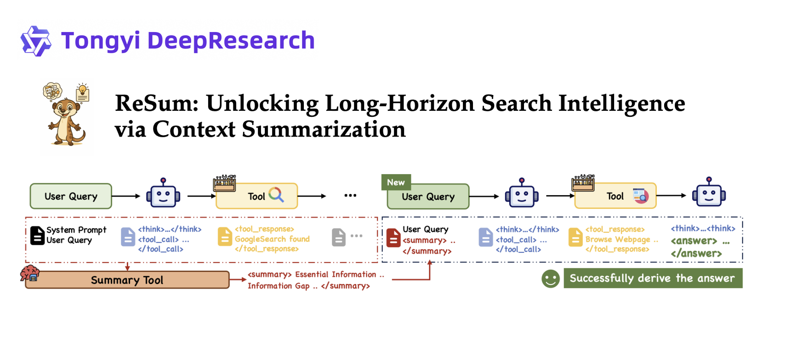
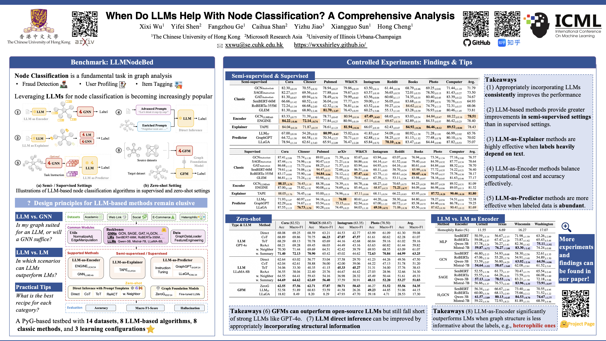
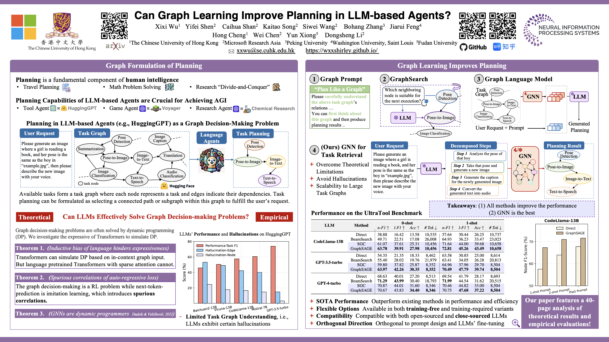

Ph.D. Candidate,
The Chinese University of Hong Kong
Student Researcher, Google
Email / GitHub / Google Scholar / Twitter / LinkedIn

Short Bio
I am currently a Ph.D. candidate at The Chinese University of Hong Kong, advised by Prof. Hong CHENG, and a Student Researcher at Google DeepMind.
Previously, I received my B.S. and M.S. in Computer Science from Fudan University in 2021 and 2024, respectively, under the supervision of Prof. Yun XIONG.
My research focuses on building autonomous agents capable of long-horizon reasoning, planning, and deep information-seeking, with an emphasis on reinforcement learning for search and tool-use agents. Before working on language agents, I conducted research on graph learning, including community detection and recommendation.
Recent News
- [Jun 2026] I joined Google DeepMind as a Student Researcher 🚀
- [May 2026] I passed my Ph.D. Thesis Proposal Defense and am now officially a Ph.D. candidate 🎓
- [Mar 2026] Our paper Agent-STAR is out on arXiv, a practical training recipe for long-horizon tool-using agents [Code]
- [Feb 2026] Our paper BrowseConf was accepted to ACL'2026 Findings 🎉
- [Jan 2026] Our papers E-GRPO and WebSailor-V2 were accepted to ICLR'2026 ✨
- [Aug 2025] Our paper MoLoRAG was accepted to EMNLP'2025. See you in Suzhou ✨
- [May 2025] Our paper LLMNodeBed was accepted to ICML'2025. See you in Vancouver again 😄
- [Nov 2024] I was awarded NeurIPS'2024 Top Reviewer 🥳
Research Highlights
-

ReSum: Context Summarization for Long-Horizon Reasoning
ReSum studies the use of periodic context summarization to support longer reasoning processes in language systems. It is designed as a lightweight extension with minimal changes to existing ReAct workflows, and shows improved performance on challenging information-seeking benchmarks like BrowseComp and GAIA.
-

LLMNodeBed: Benchmarking LLMs for Node Classification (ICML'2025)
We introduce LLMNodeBed, a PyG-based testbed for LLM-based node classification algorithms. It integrates 14 datasets, supports 8 LLM-based and 8 classic methods, and covers 3 learning configurations. With LLMNodeBed, we train and evaluate over 2,700 models to analyze the effects of factors like LLM type and size, prompt, learning paradigm, and dataset homophily. Our study reveals 8 key insights, including (1) optimal settings for each algorithm category, and (2) scenarios where LLMs significantly outperform LMs.
-

Graph Learning for Task Planning (NeurIPS'2024)
In language agents, available tasks naturally form a task graph, where nodes represent tasks and edges denote dependencies. Under such context, task planning involves selecting a path within this graph to fulfill user requests. We find that the bottleneck in LLMs' planning abilities lies in their limited understanding of the task graph. Therefore, we introduce GNNs as a simple fix, available in both training-free and training-required variants. Extensive experiments demonstrate that GNN-based methods surpass existing solutions even without training.


Technical Reports
-
Tongyi DeepResearch Technical Report
Tongyi DeepResearch Team (Xixi Wu contributed to RL training implementation for Tongyi DeepResearch models)
arXiv preprint, 2025. 100+ Citations
-
WebSailor: Navigating Super-human Reasoning for Web Agent
Kuan Li, Zhongwang Zhang, Huifeng Yin, Liwen Zhang, Litu Ou, Jialong Wu, Wenbiao Yin, Baixuan Li, Zhengwei Tao, Xinyu Wang, Weizhou Shen, Junkai Zhang, Dingchu Zhang, Xixi Wu, Yong Jiang, Ming Yan, Pengjun Xie, Fei Huang, and Jingren Zhou
arXiv preprint, 2025. Huggingface Daily Paper Top-1 🏆, 200+ Citations
Selected Publications
-
Demystifying Reinforcement Learning for Long-Horizon Tool-Using Agents: A Comprehensive Recipe
Xixi Wu, Qianguo Sun, Ruiyang Zhang, Chao Song, Junlong Wu, Yiyan Qi, and Hong Cheng
arXiv preprint, 2026
-
BrowseConf: Confidence-Guided Test-Time Scaling for Web Agents
Litu Ou, Kuan Li, Huifeng Yin, Liwen Zhang, Zhongwang Zhang, Xixi Wu, Rui Ye, Zile Qiao, Pengjun Xie, Jingren Zhou, and Yong Jiang
Findings of the Association for Computational Linguistics (ACL), 2026
-
ReSum: Unlocking Long-Horizon Search Intelligence via Context Summarization
Xixi Wu*, Kuan Li*, Yida Zhao, Liwen Zhang, Litu Ou, Huifeng Yin, Zhongwang Zhang, Xinmiao Yu, Dingchu Zhang, Yong Jiang, Pengjun Xie, Fei Huang, Minhao Cheng, Shuai Wang, Hong Cheng, and Jingren Zhou
arXiv preprint, 2025. ~80 Citations
-
Repurposing Synthetic Data for Fine-grained Search Agent Supervision
Yida Zhao, Kuan Li, Xixi Wu, Liwen Zhang, Dingchu Zhang, Baixuan Li, Maojia Song, Zhuo Chen, Chenxi Wang, Xinyu Wang, Kewei Tu, Pengjun Xie, Jingren Zhou, and Yong Jiang
Proceedings of the International Conference on Learning Representations (ICLR), 2026
-
MoLoRAG: Bootstrapping Document Understanding via Multi-modal Logic-aware Retrieval
Xixi Wu, Yanchao Tan, Nan Hou, Ruiyang Zhang, and Hong Cheng
Proceedings of the Conference on Empirical Methods in Natural Language Processing (EMNLP), 2025
-
When Do LLMs Help With Node Classification? A Comprehensive Analysis
Xixi Wu, Yifei Shen, Fangzhou Ge, Caihua Shan, Yizhu Jiao, Xiangguo Sun, and Hong Cheng
Proceedings of the 42nd International Conference on Machine Learning (ICML), 2025
-
Can Graph Learning Improve Planning in LLM-based Agents?
Xixi Wu*, Yifei Shen*, Caihua Shan, Kaitao Song, Siwei Wang, Bohang Zhang, Jiarui Feng, Hong Cheng, Wei Chen, Yun Xiong, and Dongsheng Li
Proceedings of the 38th Conference on Neural Information Processing Systems (NeurIPS), 2024


Experience
-
Google DeepMind
Student Researcher Jun. 2026 -
Mountain View, CA, USA
-

Alibaba Group
Research Intern, Deep Research Team, Tongyi Lab Jun. 2025 - Oct. 2025
Hangzhou, China
-

Microsoft Research Asia
Research Intern, Shanghai AI/ML Group Feb. 2024 - Jun. 2024
Shanghai, China
Selected Awards
- ACM Web Conference Student Travel Award 2023
- Second Class Scholarship for Outstanding Student, Fudan University 2018 & 2021
- Second Prize of Undergraduate Mathematical Contest in Modeling, Shanghai, China (CUMCM) 2019
- First Prize in National Olympiad in Mathematics in Provinces, Jiangsu, China 2016
Professional Services
- Conference Reviewer: NeurIPS'2024 (Top Reviewer Award🏆) - 2026, ICLR'2025 - 2026, ICML'2025 - 2026, WWW'2024 Graph Foundation Model (GFM) Workshop, SIGKDD'2024 - 2025, AAAI 2026
- Journal Reviewer: IEEE Transactions on Knowledge and Data Engineering (TKDE), Transactions on Machine Learning Research (TMLR)
Miscellaneous
- Goal for this year: run a half marathon! Let's see 💨
- I love sports like swimming 🏊 and running 🏃. I also enjoy cooking Chinese food 🤣
- During my undergraduate studies, I was interested in mobile app development (You can find all the source codes on my GitHub):

Lose Weight, a Flutter App

Hulv, a Mini-Program

Chatroom, a Desktop App
- I enjoy exploring the unknown and strive to keep moving forward on this path of discovery and learning ✨